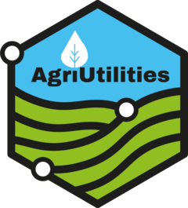

Function reference
-
check_design_met() - Check Experimental Design
-
single_trial_analysis() - Single Trial Analysis
-
met_analysis() - Multi-Environmental Trial Analysis
-
print(<checkAgri>) - Print an object of class
checkAgri
-
print(<smaAgri>) - Print an object of class
smaAgri
-
print(<metAgri>) - Print an object of class
metAgri
-
plot(<checkAgri>) - Plot an object of class
checkAgri
-
h_cullis() - Cullis heritability for lme4 models
-
extract_vcov() - Extract Variance-Covariance from ASReml-R
-
fa_summary() - Factor Analytic Summary
-
heritability_fa() - Heritability for Factor Analytic Models in ASReml-R
-
check_connectivity() - Check connectivity between trials
-
covcor_heat() - Correlation Covariance Heatmap
-
gg_cor() - Triangular Correlation Plot
-
parameters_gg() - Genetic Gain Parameters
-
stability() - Stability Coefficients